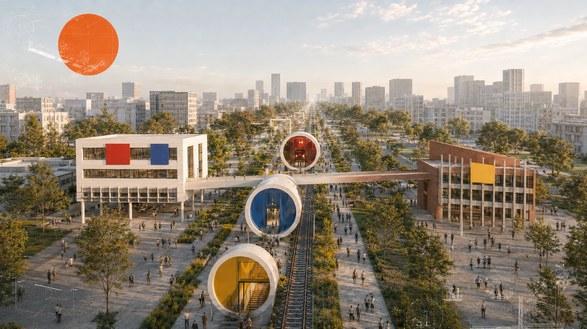

一脊｜京张公共创新脊
串联铁路遗产、慢行、蓝绿、开放首层和公共服务，形成连续的城市公共生活界面。
GOOD CITY FIRST｜城市生活优先
从百年铁路工程走向AI时代城市创新
一条连接创新、生活与城市更新的公共创新走廊

01 / Urban Structure
以京张公共创新脊为连续空间骨架，以众智园、AI原点社区和大钟寺承接三种城市角色，以中关村科技服务翼和小月河场景赋能翼连接产业、社区、生态与市政反馈。
串联铁路遗产、慢行、蓝绿、开放首层和公共服务，形成连续的城市公共生活界面。
众智园 CITY TESTBED、AI原点社区 LIVING LOAD、大钟寺 RENEWAL RULE LAB。
中关村科技服务翼连接科研与专业服务，小月河场景赋能翼连接生态、社区与市政场景。
Scale / Scope
公告文字中的统筹研究范围，组织创新生态、产业协同、公共服务和城市系统关系；当前作为研究尺度使用。
当前提交的 provisional_rough 总体设计模型范围，落位公共脊、空间结构、蓝绿慢行与城市接口。
三处重点区域，承接技术验证、真实生活负载和更新规则转化。
Identity / Wayfinding
以文字标识作为母品牌，以橙色星形作为公共荣誉节点标记，以三重点区和年度活动形成层级清晰的城市导视系统。
母品牌：京张·城市联调带｜JING-ZHANG CITY COMMISSIONING BELT；主标语为 GOOD CITY FIRST｜城市生活优先。
片区识别：众智园 CITY TESTBED、AI原点社区 LIVING LOAD、大钟寺 RENEWAL RULE LAB 作为母品牌下的片区副身份。
节点与活动：橙色星形表示公共荣誉节点与共享场，指向公共空间服务与活动场所；Commissioning Week、Open Urban AI Plugfest、Civic Audit Open Day、Rulebook Release 作为年度活动子品牌。
色彩与版式：#B5523B铁路脊红（RGB 181, 82, 59）、#CF9D3E片区金（RGB 207, 157, 62）、#1C5C73生活蓝（RGB 28, 92, 115）、#486B5D更新绿（RGB 72, 107, 93）；安全区为字标大写高度的 1x，建议屏幕最小宽度 120px、印刷最小宽度 25mm，支持全彩、黑白单色和反白版本。页面字体来源与 SIL Open Font License 1.1 见 report/copyright_statement.md。
Regional / Coordination
京张以城市验证与规划转化接口承接区域创新资源：科研、科学智能、工程化、社区生活反馈和区域支撑通过一脊、三重点区、两翼与多节点进入城市空间，形成可理解、可验证、可回流的协同路径。


一脊·三重点区·两翼·多节点把区域能力落到公共空间、社区服务、工程接口与存量更新单元。
图3所示完整场景来源板见专业评审页；社区、科研、制造、遗产与区域支撑均以典型场景示意表达。
通过场景验证、日常使用、证据沉淀和规划规则更新，把本地经验回流到区域网络。
02 / Civic Spine
公共脊以铁路遗产连续性为文化底色，以慢行、树荫、休憩、无障碍、开放首层和公共服务构成日常基底，同时支持活动、展陈、测试和公众交流的状态转换。
以遗产构件、铺装、展陈和可停留家具讲述京张工程文化。
承接开发者、企业、科研人员和公共部门的交流、解释与协作。
把社区服务、全龄活动、健康、休憩和邻里交往组织在可达节点。
连接铁路、道路、街区和蓝绿空间，形成东西向步行与无障碍过渡。
支持联调周、Plugfest、市集、展览与日常使用的时间性转换。
03 / Three Key Areas
开放创新与城市验证片区。以公共创新前厅为入口，形成受控验证核心、原型过渡带、有限真实应用界面和可插拔测试单元。
AI时代高品质生活社区。以15分钟生活网络、开放首层、全龄公共空间、教育健康节点和连续无障碍慢行为生活提供支撑。
存量创新城区更新示范单元。以单元统筹、项目实施和动态维护，把成熟证据转化为空间接口、公共服务和更新规则。
04 / Evidence Drawings
五张图依次呈现总体结构、用地功能、重点区角色、慢行蓝绿系统和指标证据；它们构成城市设计展览页的空间阅读主线。

provisional_rough 总体设计模型范围。


05 / Architecture + Public Space
三张建筑方案图把空间结构进一步转译为建筑界面、首层、连廊、庭院、城市露台、材料和公共空间序列，补充从片区到场所的设计阅读。


建筑以完整城市功能为基础，AI以可维护、可替换的附加层进入；公共大厅、无障碍、消防疏散、人工服务和公共连廊在空间设计中保持清晰关系。
06 / Planning Innovation
区域算力 → 片区共享服务 → 边缘节点，匹配训练、推理、低时延和隐私敏感任务。
Protected 保障型、Flexible 柔性型、Migratable 可迁移型任务按时空条件组织。
W0–W3形成从边缘微节点到高密算力的资源适配等级。
空间准入、服务范围、资源承载、运行条件、责任主体、动态维护，把AI设施与公共服务纳入既有规划体系。
四条公共服务路径并行组织，支持不同年龄、能力和数字使用偏好的居民。
以最小必要感知、明确告知、非识别技术、本地处理和可退出机制支撑宁静公共生活。
07 / From Evidence to Operation
规则库、证据账本、公共空间微节点、无障碍服务、低感知路径、影子运行和开放活动。
开放测试环境、共享算力与能源接口、公共服务网络、更新议事厅和适应性再利用单元。
更大范围真实运行、低空物流、地下市政接口和高强度算力等系统性行动。
申请 → 资格审查 → 受控测试 → 证据复核 → 社区/企业服务 → 规则更新 → Scale / Hold / Exit（扩展运行 / 保持受控 / 降级退出），Developer Commons 作为公共空间运营入口。
明确使用案例、空间范围、数据类别、人工责任、资源条件、服务路径和测试计划后进入；责任、隐私、无障碍、安全或容量证据待补时转入 Hold。
记录报名与筛选、C3 测试、服务转化、证据完整度、公众反馈、问题闭环、复验、规则更新和退出记录；目标值与责任主体在下一阶段确认。
Review Interface
六项任务由同一条城市创新链回应：总体概念与功能统筹、AI创新生态、AI+场景、公共空间与新业态、京张文化转译、全球活动与长期运营。
一脊、三重点区、两翼、多节点与五张核心规划图。
12张场景卡、4个验证场景、8类用户与四路径公共服务。
City Evidence Ledger、C0–C6、年度活动和 Rulebook Release。
43.6 km² 是公告文字统筹研究范围，当前以城市系统研究尺度呈现；约11.41 km² 是投稿 provisional_rough 总体设计模型范围。第05图已统一为六类 Civic AI Overlay 规划控制，图件、正文和指标各自承担对应的证据层级。
当前页面展示城市设计概念模型。正式 polygon、法定控规、权属、文保、道路、铁路、市政容量和工程资料到位后，开展边界衔接、面积复算、交通与建筑专项校核；FAR、高度、密度、人口承载、MW、MVA、水量和管径等字段进入后续专业接口。
建筑视觉承担空间意向、材料氛围和建筑—公共空间关系表达；City Commissioning Pod、连廊、低空物流与地下接口的数量、尺寸和工程条件以专项论证为准。Civic AI Overlay、C0–C6和证据账本用于规划协同与运行复验，公共参与和法定程序沿既有专业体系推进。
页面为离线静态展示，数字声明采用与 metrics.json 一致的设计模型值；投稿包最终机器状态以官方工作树重新执行 render、finalize、self-check 和 participant preflight 的回执为准。
来源：主办方公告、官方仓库任务书、source registry、GeoJSON、指标与三类矩阵。
视觉来源：封面、建筑方案、区域协同图和核心指标图均按逐图来源登记；AI/数字生成概念图与典型场景示意的公开提交权状态以 report/copyright_statement.md 和 sources.json 为准。
假设：当前几何服务于概念设计和一致性检查；正式控制、权属、文保、工程容量、低空管理和道路红线资料由下一阶段补充，并触发统一复核与复算。